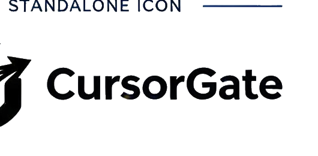

CursorGate brand
Choose the logo direction
I cleaned up the broken header logo placement and included three usable directions based on the supplied brand concepts. The new custom gradient CG mark is currently active across the site.
Option 1 — Gradient Horizontal
ACTIVEBest fit for the current white header. Uses the blue-to-violet brand gradient and keeps the wordmark readable.
Option 2 — Standalone Mark
Cleaner, more modern direction. Ideal if you want a compact header with the CursorGate name rendered as text beside the mark.
Option 3 — Monochrome Wordmark

Minimal and corporate. Works especially well with the site's navy/slate UI and is the safest choice for a restrained enterprise look.
Current implementation: Option 1 is active. To switch, replace the header image source with the chosen asset; I can do that for you once you pick 1, 2, or 3.